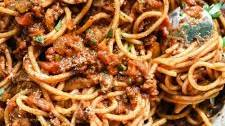

Spaghetti

This is spaghetti, a delicious meal
This is spaghetti, which is very similar to lasagna but with tubular or cylindrical pasta rather than the archaic sheet form of the former.
Ingredients Required
- Cheese
- More cheese
- However much cheese you've got, get more
- Some pasta I guess
Steps to prepare
- Add all cheese to bowl
- Snack on it for a bit
- Heat a bit up with pasta
- Enjoy!